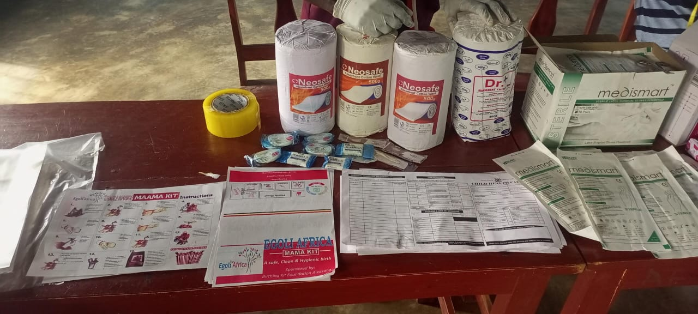
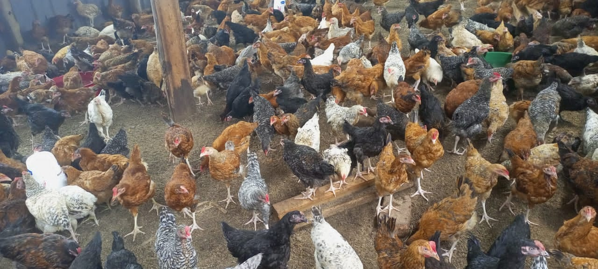
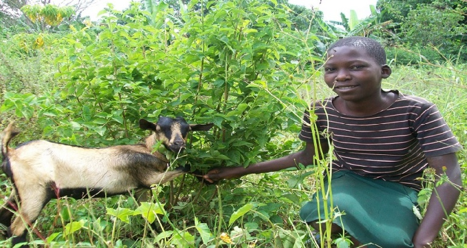
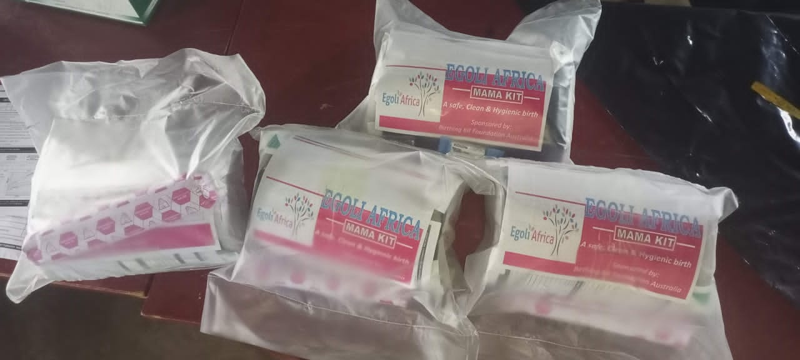
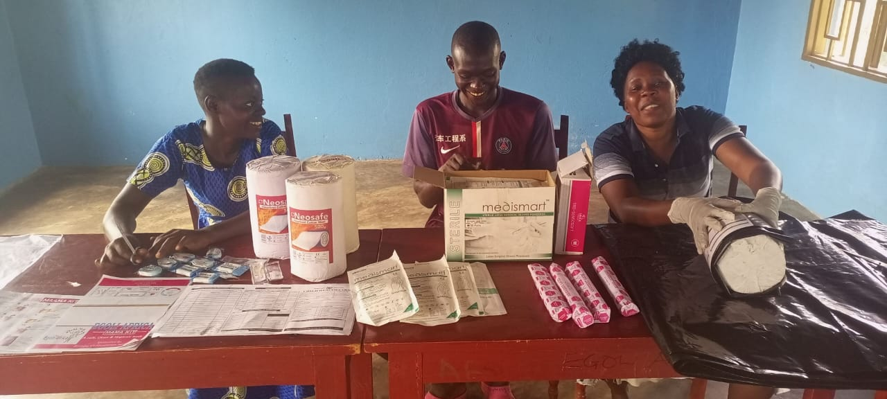
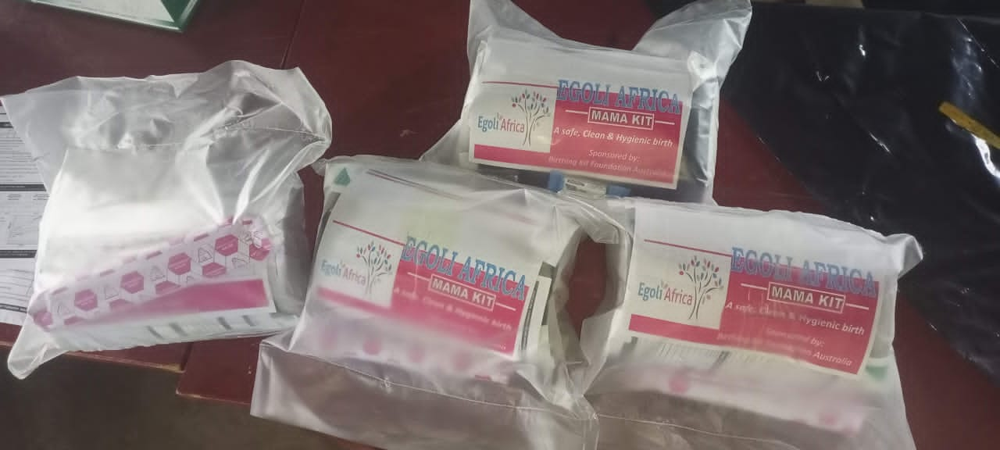
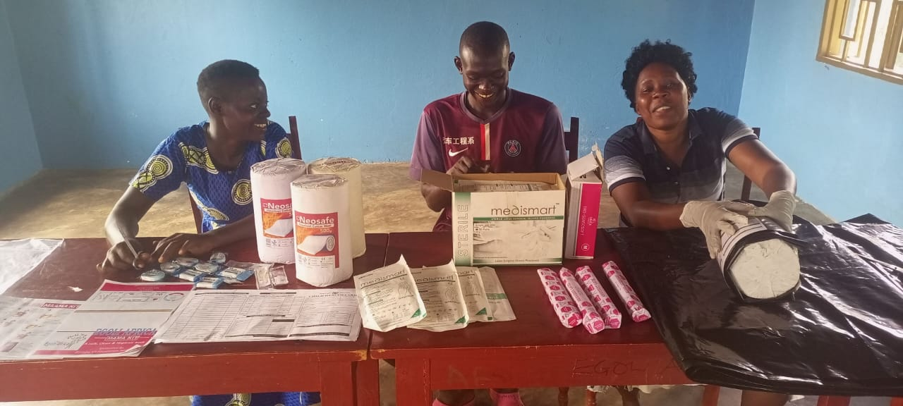

Our Agriculture Initiatives

Sustainable Farming
Modern techniques and organic practices to boost yields and preserve soil health.
Learn More
Agro‑Processing
Value‑addition through processing methods that enhance food security and farmer incomes.
Learn More

Livestock Management
Best practices for animal health, quality feed, and sustainable rearing.
Learn More

Irrigation & Water Conservation
Efficient irrigation systems ensuring optimal water use and supporting crop growth.
Learn More 


